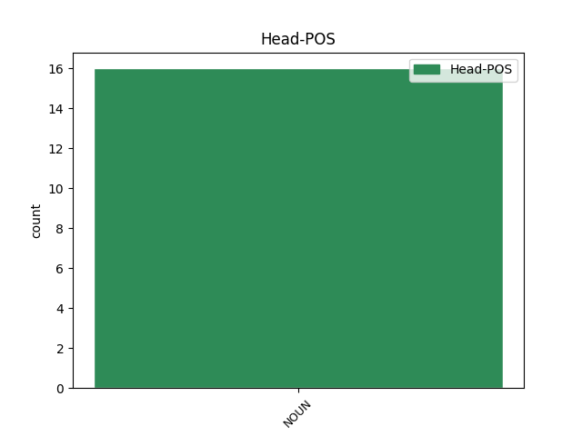
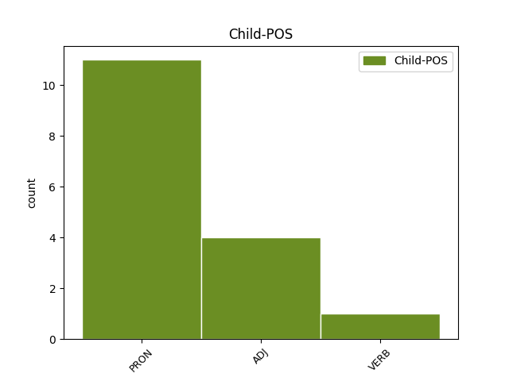

Distribution of features within this leaf



Agreement Rules sorted by frequency.
- When the dependent token is the conjunct(conj) of the head token, and the head token is NOUN and the dependent token is PRON.
1 Jag _ _ _ _ 0 _ _ _
2 hörde _ _ _ _ 0 _ _ _
3 knaster _ _ _ _ 0 _ _ _
4 och _ _ _ _ 0 _ _ _
5 skrap skrap NOUN IND-NOM Case=Nom|Definite=Ind|Gender=Neut|Number=Plur 0 _ _ _
6 och _ _ _ _ 0 _ _ _
7 något någon PRON IND-SG Definite=Ind|Gender=Neut|Number=Sing|PronType=Rel 5 conj _ _
8 som _ _ _ _ 0 _ _ _
9 lät _ _ _ _ 0 _ _ _
10 som _ _ _ _ 0 _ _ _
11 damm _ _ _ _ 0 _ _ _
12 på _ _ _ _ 0 _ _ _
13 en _ _ _ _ 0 _ _ _
14 grammofonnål _ _ _ _ 0 _ _ _
15 . _ _ _ _ 0 _ _ _
1 Uppassare uppassare NOUN IND-NOM Case=Nom|Definite=Ind|Gender=Com|Number=Plur 0 _ _ _
2 och _ _ _ _ 0 _ _ _
3 uppassade uppassa ADJ POS-PL Case=Nom|Definite=Ind|Degree=Pos|Gender=Com|Number=Plur 1 conj _ _
4 blåste _ _ _ _ 0 _ _ _
5 i _ _ _ _ 0 _ _ _
6 trasor _ _ _ _ 0 _ _ _
7 ut _ _ _ _ 0 _ _ _
8 genom _ _ _ _ 0 _ _ _
9 dörren _ _ _ _ 0 _ _ _
10 . _ _ _ _ 0 _ _ _
1 Jag _ _ _ _ 0 _ _ _
2 hade _ _ _ _ 0 _ _ _
3 klätt _ _ _ _ 0 _ _ _
4 mig _ _ _ _ 0 _ _ _
5 som _ _ _ _ 0 _ _ _
6 en _ _ _ _ 0 _ _ _
7 krigare _ _ _ _ 0 _ _ _
8 : _ _ _ _ 0 _ _ _
9 svart _ _ _ _ 0 _ _ _
10 från _ _ _ _ 0 _ _ _
11 urringning _ _ _ _ 0 _ _ _
12 till _ _ _ _ 0 _ _ _
13 innersulor _ _ _ _ 0 _ _ _
14 , _ _ _ _ 0 _ _ _
15 håret _ _ _ _ 0 _ _ _
16 hängande _ _ _ _ 0 _ _ _
17 , _ _ _ _ 0 _ _ _
18 tjocka _ _ _ _ 0 _ _ _
19 guldringar guldring NOUN PL-IND-NOM Case=Nom|Definite=Ind|Gender=Com|Number=Plur 0 _ _ _
20 i _ _ _ _ 0 _ _ _
21 öronen _ _ _ _ 0 _ _ _
22 , _ _ _ _ 0 _ _ _
23 krigsmålad krigsmålad VERB AD-SG-IND Case=Nom|Definite=Ind|Gender=Com|Number=Sing 19 conj _ SpaceAfter=No
24 . _ _ _ _ 0 _ _ _
Disagree Examples:
1 De _ _ _ _ 0 _ _ _
2 var _ _ _ _ 0 _ _ _
3 erövrare erövrare NOUN PL-IND-NOM Case=Nom|Definite=Ind|Gender=Com|Number=Plur 0 _ _ _
4 och _ _ _ _ 0 _ _ _
5 till _ _ _ _ 0 _ _ _
6 det _ _ _ _ 0 _ _ _
7 fordras _ _ _ _ 0 _ _ _
8 bara _ _ _ _ 0 _ _ _
9 råa _ _ _ _ 0 _ _ _
10 styrkan _ _ _ _ 0 _ _ _
11 – _ _ _ _ 0 _ _ _
12 ingenting ingenting PRON NEG-SG Definite=Ind|Gender=Neut|Number=Sing|PronType=Neg 3 conj _ _
13 att _ _ _ _ 0 _ _ _
14 skryta _ _ _ _ 0 _ _ _
15 med _ _ _ _ 0 _ _ _
16 eftersom _ _ _ _ 0 _ _ _
17 ens _ _ _ _ 0 _ _ _
18 styrka _ _ _ _ 0 _ _ _
19 bara _ _ _ _ 0 _ _ _
20 är _ _ _ _ 0 _ _ _
21 det _ _ _ _ 0 _ _ _
22 tillfälliga _ _ _ _ 0 _ _ _
23 resultatet _ _ _ _ 0 _ _ _
24 av _ _ _ _ 0 _ _ _
25 andras _ _ _ _ 0 _ _ _
26 svaghet _ _ _ _ 0 _ _ _
27 . _ _ _ _ 0 _ _ _
1 Han _ _ _ _ 0 _ _ _
2 ingav _ _ _ _ 0 _ _ _
3 en _ _ _ _ 0 _ _ _
4 känsla _ _ _ _ 0 _ _ _
5 av _ _ _ _ 0 _ _ _
6 osäkerhet _ _ _ _ 0 _ _ _
7 . _ _ _ _ 0 _ _ _
8 Just _ _ _ _ 0 _ _ _
9 det _ _ _ _ 0 _ _ _
10 ! _ _ _ _ 0 _ _ _
11 Osäkerhet _ _ _ _ 0 _ _ _
12 . _ _ _ _ 0 _ _ _
13 Inte _ _ _ _ 0 _ _ _
14 någon _ _ _ _ 0 _ _ _
15 bestämd _ _ _ _ 0 _ _ _
16 misstro _ _ _ _ 0 _ _ _
17 – _ _ _ _ 0 _ _ _
18 bara _ _ _ _ 0 _ _ _
19 osäkerhet osäkerhet NOUN SG-IND-NOM Case=Nom|Definite=Ind|Gender=Com|Number=Sing 0 _ _ _
20 , _ _ _ _ 0 _ _ _
21 inget _ _ _ _ 0 _ _ _
22 annat annan ADJ POS-SG-IND Case=Nom|Definite=Ind|Degree=Pos|Gender=Neut|Number=Sing 19 conj _ SpaceAfter=No
23 . _ _ _ _ 0 _ _ _
1 Vinter vinter NOUN SG-IND-NOM Case=Nom|Definite=Ind|Gender=Com|Number=Sing 0 _ _ _
2 och _ _ _ _ 0 _ _ _
3 mörkt mörk ADJ POS-SG-IND Case=Nom|Definite=Ind|Degree=Pos|Gender=Neut|Number=Sing 1 conj _ _
4 här _ _ _ _ 0 _ _ _
5 , _ _ _ _ 0 _ _ _
6 men _ _ _ _ 0 _ _ _
7 i _ _ _ _ 0 _ _ _
8 Cambridge _ _ _ _ 0 _ _ _
9 har _ _ _ _ 0 _ _ _
10 våren _ _ _ _ 0 _ _ _
11 kanhända _ _ _ _ 0 _ _ _
12 redan _ _ _ _ 0 _ _ _
13 börjat _ _ _ _ 0 _ _ _
14 sjunga _ _ _ _ 0 _ _ _
15 för _ _ _ _ 0 _ _ _
16 full _ _ _ _ 0 _ _ _
17 hals _ _ _ _ 0 _ _ _
18 ? _ _ _ _ 0 _ _ _
1 Inga _ _ _ _ 0 _ _ _
2 kort kort NOUN IND-NOM Case=Nom|Definite=Ind|Gender=Neut|Number=Plur 0 _ _ _
3 , _ _ _ _ 0 _ _ _
4 inga _ _ _ _ 0 _ _ _
5 presenter _ _ _ _ 0 _ _ _
6 , _ _ _ _ 0 _ _ _
7 och _ _ _ _ 0 _ _ _
8 han han PRON PERS-P3SG-NOM Case=Nom|Definite=Def|Gender=Com|Number=Sing|PronType=Prs 2 conj _ _
9 skulle _ _ _ _ 0 _ _ _
10 tillbringa _ _ _ _ 0 _ _ _
11 kvällen _ _ _ _ 0 _ _ _
12 med _ _ _ _ 0 _ _ _
13 att _ _ _ _ 0 _ _ _
14 låtsas _ _ _ _ 0 _ _ _
15 att _ _ _ _ 0 _ _ _
16 han _ _ _ _ 0 _ _ _
17 inte _ _ _ _ 0 _ _ _
18 fanns _ _ _ _ 0 _ _ _
19 . _ _ _ _ 0 _ _ _
1 De _ _ _ _ 0 _ _ _
2 var _ _ _ _ 0 _ _ _
3 en _ _ _ _ 0 _ _ _
4 hobby hobby NOUN SG-IND-NOM Case=Nom|Definite=Ind|Gender=Com|Number=Sing 0 _ _ _
5 , _ _ _ _ 0 _ _ _
6 något någon PRON IND-SG Definite=Ind|Gender=Neut|Number=Sing|PronType=Rel 4 conj _ _
7 att _ _ _ _ 0 _ _ _
8 fascineras _ _ _ _ 0 _ _ _
9 av _ _ _ _ 0 _ _ _
10 , _ _ _ _ 0 _ _ _
11 hans _ _ _ _ 0 _ _ _
12 undervattenssamling _ _ _ _ 0 _ _ _
13 av _ _ _ _ 0 _ _ _
14 sällsamheter _ _ _ _ 0 _ _ _
15 och _ _ _ _ 0 _ _ _
16 märkligheter _ _ _ _ 0 _ _ _
17 . _ _ _ _ 0 _ _ _